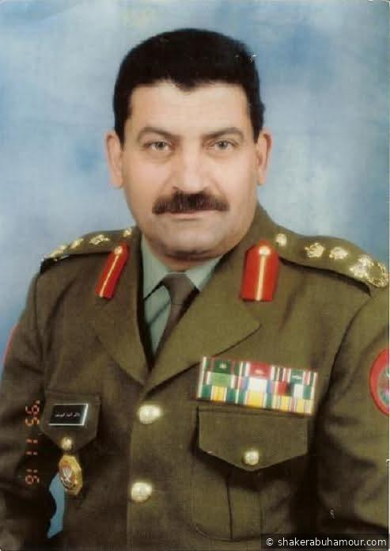

السيرة الذاتية

العميد الركن المتقاعد شاكر أحمد حسن أبو حمور
المعلومات الشخصية
الأسم:
شاكر أحمد حسن أبو حمور
تاريخ ومكان الولادة:
1951 – مدينة السلط، المملكة الأردنية الهاشمية
الجنسية:
الأردنية
اللغات:
العربية (الأم)، الإنجليزية، الروسية
الهواية المفضلة:
كرة اليد
المؤهلات العسكرية والتعليم
التحق بمدرسة المرشحين – القوات المسلحة الأردنية وتخرج برتبة تلميذ مرشح عام 1970 - صنف دروع
تلقى العديد من الدورات العسكرية التأسيسية والمتقدمة داخل الأردن وخارجه، في عدة مجالات، كمجالات القيادة، الإدارة، والتخطيط العسكري
الفائز الأول بدورة الصاعقة رقم 39 عام 1974
حاصل على بكالوريوس في العلوم العسكرية/ جامعة مؤتة
المسيرة العسكرية
بدأ خدمته في وحدات الجيش العربي وتدرج في المناصب التالية:
قائد فصيل اشارة
ركن/3 عمليات كتيبة مشاة آلية
أركان حرب كتيبة آلية
قائد سرية كتيبة آلية
مساعد قائد كتيبة دبابات
ركن أول إمداد وتجهيز فرقة آلية
قائد كتيبة آلية
قائد مجموعة إسناد إداري ولوجستي لفرقة آلية
مدير لواء آلي
رئيس شعبة الإعلام العسكري
مدير تحرير مجلة الأقصى العسكرية (1993-1996)
رئيس الوفود الأعلامية لقوات حفظ السلام الأردنية (1993-1996)
ضابط ادارة ومساعد الملحق الدفاعي موسكو- الاتحاد السوفيتي (1980-1983)
الخبرة الإعلامية
ترأس الشعبة المسؤولة عن الاعلام في مديرية التوجيه المعنوي
المنسق العام لبرنامج الجيش العربي
مدقق ومعد برامج- اذاعة القوات المسلحة الأردنية
ما بعد الخدمة العسكرية
أُحيل إلى التقاعد برتبة عميد ركن دروع عام 1996
أعيد تعينه مدنياً في عام 1997-مدقق ومعد برامج- اذاعة القوات المسلحة اللأردنية
.استمر في هذا الدور حتى عام 2017، وترك بصمة مميزة في العمل الإذاعي العسكري
ساهم في اعداد وانتاج برامج توعوية وثقافية ذات طابع وطني وعسكري، ركزت
على رفع الروح المعنوية لدى الجنود وتوعية المجتمع المدني بدور القوات المسلحة
.عضو تجمع البلقاء للمتقاعدين العسكريين
.رئيس مجلس ادارة شركة الاورواسيوية للنقل البحري، وعضو مجلس ادارة لعدة شركات
.يحرص على تنمية المجتمع المحلي والتواصل والنشاطات الاجتماعية
الأوسمة والشارات
وسام الكوكب الأردني
وسام الاستقلال الأردني
وسام الاستحقاق العسكري
وسام اليوبيل الفضي
وسام النهضه
وسام الخدمة المخلصة
شارة الخدمة 1967-1971
شارة الكفاءة القيادية
شارة الكفاءة الادارية والفنية
شارة الكفاءة التدريبية
الانتماء العشائري
ينتمي إلى عشيرة أبو حمور، وهي عشيرة أردنية مستقلة ذات جذور عريقة في مدينة السلط
شهادات الزملاء
شخصية عسكرية بارزة، عُرف خلال خدمته بانضباطه، حكمته، شجاعته، وحنكته القيادية
ترك اثراً طيباً في كل المواقع التي شغلها، وكان محل احترام وتقدير لدى الجميع
ــــــــــــــ
والد كل من أحمد والضابط الجمركي حسن والدكتور زيد وليث والمهندسة الاء ونجم الدين والقبطان كمال والدكتوره آيه والدكتور محمد نور ومحمود خير وتسنيم
ـــــ